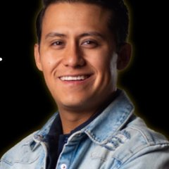
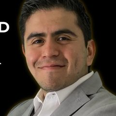
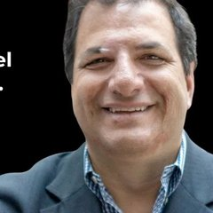

La problemática #1 en Proyecto Ernest
Proyecto Ernest tiene un método que cambia vidas, pero no tiene un sistema que convierta ese método en ventas constantes.
Desde 2011 el método se ha probado cara a cara, en bootcamps y en televisión. En 2021 se reconstruyó y se empaquetó para llevarlo en línea. Funciona: quien lo vive, cambia. Pero las ventas todavía no llegan con constancia y el proyecto sigue dependiendo de capital externo para sostenerse.
Ventas que dependen de la suerte, no de un sistema
Antes los clientes llegaban por televisión y recomendaciones. Funcionaba, pero nunca se sabía cuánto se iba a vender el mes siguiente, y en línea ese flujo todavía no existe.
Presencia en línea que no se convierte en negocio
Como empresa nueva en digital, hace falta tráfico, y ese tráfico tiene que convertirse en ventas reales, no en likes ni en seguidores.
Llegan prospectos que no pueden invertir
Los leads que sí llegan no tienen la posición económica para comprar. Se les atiende con el mismo cariño que a todos, pero consumen llamadas y energía del equipo sin calificar.
Muchos productos, ningún foco
La ruta de 11 módulos, los programas plus, VIP y todo el ecosistema que ya existe compiten entre sí. Cuando todo se ofrece al mismo tiempo, nada se vende con claridad.
Los ingredientes son buenos, solo están en desorden
Proyecto Ernest no arranca de cero. Lo que falta es orden: oferta, mensaje y sistema. Lo difícil de construir ya está.
Un método probado desde 2011
El 100% de quienes lo han tomado quedaron satisfechos y el 75% volvió a comprar.
La experta es el producto
Perla habla, conecta y transmite autoridad frente a cámara. En este nicho, eso es lo que vende.
A dónde quiere llegar Proyecto Ernest
Un negocio que se paga solo
Que Proyecto Ernest pague a todo el equipo y deje de necesitar capital externo.
Por qué premium y no masivo
La tartamudez es una condición de por vida, así que un modelo masivo parece lógico. El problema es que ese es el juego más competido del mercado en línea. Arrancando, el camino más corto a 500,000 MXN al mes es otro.
Menos ventas para llegar a la meta
Con una oferta de 50,000 MXN, 500,000 MXN al mes son 10 clientes. A 100,000 MXN, son 5.
Clientes más comprometidos
Quien invierte en serio se compromete más, tiene más resultados y refiere a personas de su mismo nivel.
3 pasos para llegar a 500,000 MXN al mes
Un camino claro, con acompañamiento en cada paso para que se ejecute de principio a fin.
Effortless Offer
Diseñamos con ustedes una sola oferta premium que cumpla tres cosas:
- Se vende con el menor esfuerzo posible.
- Se entrega con el menor esfuerzo posible.
- Llega a la meta con la menor cantidad de ventas posible.
El punto de partida sugerido es 50,000 MXN. El precio sube conforme crecen los casos de éxito, la claridad y la confianza en la oferta.
Flujo de leads constante y predecible
La mezcla entre contenido orgánico y anuncios se define según el estilo de cada quien. Todo parte de la arquitectura narrativa: el documento con los ángulos, historias y mensajes que filtran al cliente ideal y alejan a quien no puede invertir.
Los anuncios arrancan con presupuesto bajo y solo se escalan cuando ya hay ventas.
Cómo funciona el programa
No es un curso. Es como si el equipo de Flow Consulting trabajara dentro de Proyecto Ernest.
6 meses de acompañamiento
Suficiente para construir, lanzar, optimizar y escalar el sistema completo.
Cómo se ven los números
Escenarios con una sola persona vendiendo, a partir de los números que revisamos en la llamada.
Supuesto: una sola persona tomando 2 llamadas al día, de lunes a viernes, unas 40 llamadas al mes. No incluye el gasto en anuncios.
Garantía de resultados
Inversión
El 100% de la inversión es el honorario de Flow Consulting por los 6 meses de acompañamiento. El gasto en anuncios va aparte.
Founders que ya recorrieron este camino
Expertos y founders de distintos nichos, cada uno con su testimonio en video.
$70K USD mensuales
Leads constantes, ventas sin fricción y un negocio alineado con su vida.
Ver testimonio$21,000 USD en su primera semana
Con 80% de rentabilidad, después de 10 años de lanzamientos con ROI negativo.
Ver testimonio$15K USD semanales
Más de 80% de rentabilidad, con una sola persona en su equipo y sin funnels complicados.
Ver testimonioEstrategia alineada a su esencia
Después de una mentoría rígida de $60K USD, realineó su estrategia y sigue escalando su comunidad.
Ver testimonio€30,000 en 2 meses
Después de 7 meses sin facturar un solo euro.
Ver testimonio$60K USD mensuales
Con 42x de retorno en publicidad y un negocio que ya no depende de él para todo.
Ver testimonioMás de $60K USD mensuales
En sus primeros 2 meses, con más de 10x de retorno en publicidad.
Ver testimonio
De $20K a $75K USD mensuales
Con 15x de retorno en publicidad.
Ver testimonio
De $49K a $150K USD mensuales
Sin invertir más en publicidad.
Ver testimonio
+$350,000 USD en el primer mes
El mes de mayor venta de cursos en línea en español en la historia de Growth Institute.
Ver testimonioLas preguntas que hicieron en la llamada
¿Cuánto es la inversión y cómo se paga?Sylvia
¿Qué incluye y quién trabaja con Perla?Sylvia
¿Cada cuánto nos reunimos?Sylvia
¿Qué parte de la inversión se va a publicidad?Sylvia
¿Conforme crezcamos hay que meterle mucho más a los anuncios?Perla
¿Cuándo se recupera la inversión?Sylvia y Fer
¿Hay garantía? ¿Son 3 o 6 meses?Sylvia y Perla
¿Han trabajado con clientes que tienen un inversionista?Sylvia
¿Funciona en español o hay que traducir todo al inglés?Antoine
¿Nos ayudan con el precio y con todos los productos que ya existen?Perla
¿Podemos tener una membresía para graduados?Perla
¿Hace falta una auditoría antes de arrancar?Antoine
¿Cómo llegamos al cliente que sí puede invertir?Fer
¿Cuántas horas a la semana requiere? ¿Cómo encaja Fer?Perla y Fer
Con este enfoque, Proyecto Ernest dejaría atrás un modelo que depende de la suerte y de capital externo, y entraría en una nueva etapa: una oferta clara, clientes calificados llegando de forma constante y un negocio que se sostiene con sus propias ventas.
No se trata de cambiar el método. Se trata de construir el sistema que lo lleve a más personas.
Revisarlo con Sylvia
Quedamos en vernos el jueves 12 o el viernes 13 de noviembre para resolver todas las dudas que surjan. Cualquier pregunta antes, aquí estoy.
Rodrigo Lohr · Flow Consulting
Aviso sobre resultados
No creemos en fórmulas para hacerse rico rápido ni en atajos. Creemos en trabajo duro e inteligente, acción enfocada y sistemas que generan apalancamiento a través de la mejora continua. Para eso están diseñados nuestros programas y la información que compartimos.
Aunque garantizamos nuestro acompañamiento y servicio, no podemos garantizar resultados que dependen de tu trabajo y de tu capacidad para ejecutar nuestras recomendaciones. De acuerdo con nuestros valores, y como lo exige la ley, no garantizamos tu capacidad de obtener resultados ni de generar dinero con nuestras ideas, información, programas, guía o estrategias.
No podemos obligarte a tomar acción. ¿De acuerdo? Estamos aquí para ayudarte compartiendo las estrategias que mejor les han funcionado a nuestros clientes, para que avances con claridad y velocidad. Nada en esta página, en nuestros sitios web o en nuestros correos es una promesa de ingresos futuros. Cada cifra financiera que compartimos es una estimación, una proyección o un resultado pasado, y no debe considerarse exacta, real ni una promesa de ingresos. Todas las cifras son ilustrativas.
Los resultados pueden variar. Los testimonios muestran el proceso de clientes anteriores, no son una promesa ni una garantía de resultados, que dependen de ti. Todos los testimonios son reales.
Antes de tomar cualquier decisión de inversión, investiga por tu cuenta, haz todas las preguntas que necesites y decide con tu propio criterio. Al usar este sitio, aceptas la responsabilidad total de tus decisiones de inversión y de sus resultados.